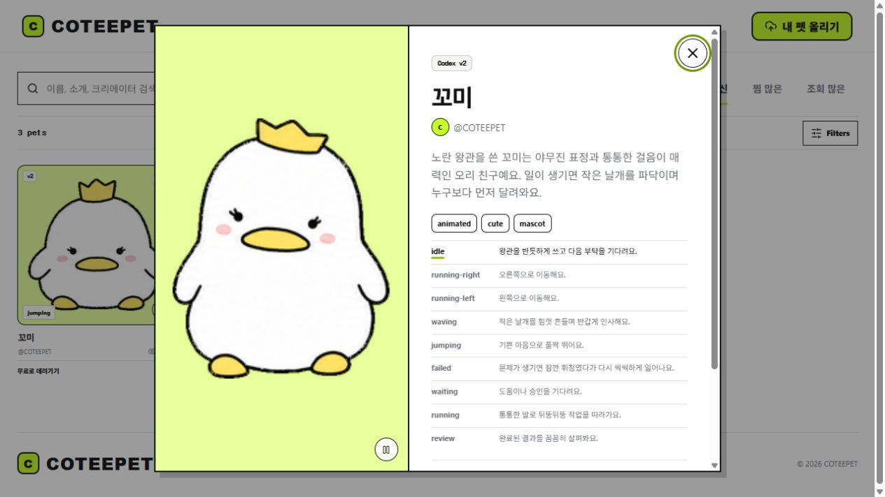

COTEEPET은 Codex Pet 캐릭터를 검색·정렬하고 애니메이션 동작을 미리 본 뒤, 찜·업로드·다운로드 흐름으로 연결하는 웹 카탈로그입니다.
COTEEPET
Overview
Problem
캐릭터 패키지가 파일과 개별 링크로 흩어지면 외형, 동작, 버전과 설명을 비교하기 어렵고 새 캐릭터를 공유하는 흐름도 분리됩니다. 한 화면에서 찾고 검토하고 등록할 수 있는 카탈로그가 필요했습니다.
Approach
검색과 정렬에서 상세 동작 확인, Creator Studio 등록, 로그인 기반 다운로드 안내까지 같은 흐름으로 이어지도록 구성했습니다.
- 이름·소개·크리에이터 기준으로 검색
- 최신·찜·조회 기준으로 정렬하고 필터 적용
- 캐릭터별 애니메이션 동작과 태그·버전 확인
- Creator Studio에서 기본 정보·동작·파일을 단계별 등록
Screen evidence

